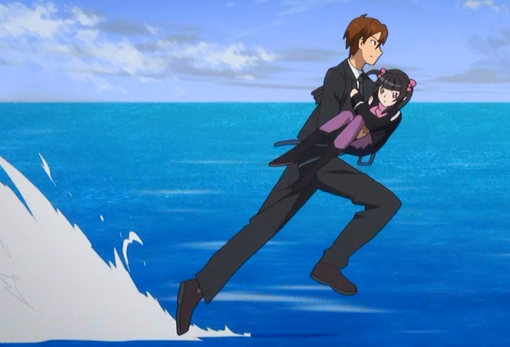

弦十郎「敵とか味方とか言う前に…子供のやりたいことを 支えてやれない大人なんてかっこ悪くてかなわないんだよ」(G11話)
Name
OTONA(風鳴 弦十郎／ナスターシャ教授／友里 あおい／藤尭 朔也／斯波田 賢仁／緒川 慎次(上から))
CV
石川 英郎／井上 喜久子／瀬戸 麻沙美／赤羽根 健治／柴田 秀勝／保志 総一朗
Scene
弦十郎「思い付きを数字で語れるものかよッ！」
ナスターシャ「何故、そこで愛!?」
友里「あったかいもの、どうぞ。」
藤尭「モニターから目を離したままでは 戦闘管制が出来ませんッ！」
斯波田 「アイドル大統領とでも呼べばいいのかい」
緒川「
」
Song
- 英雄故事
- 電光刑事バン